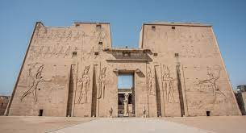

The Great Pyramid of Giza is a UNESCO-listed World Heritage site, the
oldest and last remaining of the original Seven Wonders of the World.
Additionally, this pyramid is the oldest and largest of all nine
pyramids found at the Giza Necropolis, and is the final resting place
of King Khufu. The Pyramid was completed in 2560 BC and took around 20
years to build!The Great Pyramid was the tallest building in the world
for 3,800 years! In fact, the first building to surpass its height was
the Lincoln Cathedral in England, constructed in 1311. In comparison,
the Pyramids of Khafre is 448 feet tall, which is about 100 feet
taller than the Statue of Liberty. The third main pyramid, the Pyramid
of Menkaure, is much shorter at 213 feet. This is about the same
height as the famous sails on Australia’s Sydney Opera House.

Originally, the temple complex sat on the banks of the River Nile. But
over the years, the water began to rise and pose a threat to the
ancient temple. The government decided to relocate the temple in 1964.
Managed by UNESCO, experts cut the temples into several pieces to
ensure nothing got damaged. They moved the temple 200 metres back from
the river, away from the rising Lake Nasser waters. Even today, it’s
considered one of the most challenging archaeological processes in
history. It wasn’t cheap either. Countries around the globe raised
around $42 million to safely move the temple. The temple is just as
sturdy as it was 2,000 years ago. According to experts, if a 10-Rich
earthquake hit the temple, it would survive.

e Karnak Temple is located in the ancient city of Thebes (Luxor today)
in Egypt. It was a place for the ancient Egyptians to worship their
gods. Karnak is an Arabic word that means ''fortified village.'' To
the ancient Egyptians, Karnak was a sacred place. The Temple of Karnak
was believed to be the spot where creation began. They also believed
it was a point of interaction between the god Amun-Ra and Egyptians.
It is important to Egypt's cultural history because it was a place of
worship and provides clues about the ancient Egyptian religion. There
were no libraries in ancient Thebes, so history was recorded on the
walls of Karnak. Pharaohs had successful events inscribed into the
walls. For instance, there are inscriptions about territory gained
under Amenhotep III. There are also religious inscriptions on the
walls.

Saqqara is a very important part of the Memphis necropolis, about 40
km from Cairo. Saqqara probably took its name from the cemetery's
"sugar" deity. Saqqara is truly an open museum, as Saqqara includes
most of the monuments of ancient Egyptian history, as it contains the
tombs of kings and senior officials of the first and second families
(about 3040-2686 BC), and the Step Pyramid also included the oldest
huge stone building in history for King Zesar (about 2686-2667). BC),
and it contains pyramids of the most important kings in the Fifth
Dynasty (about 2494-2345 BC) and the Sixth (around 2345-2181 BC),
where the pyramid of King Wanis (around 2375-2345 BC) was the first to
inscribe his burial chamber with texts The pyramids, which were
intended to protect the king during his journey in the other world. In
addition to the royal tombs of the Old Kingdom, Saqqara contained an
enormous group of tombs of senior individuals

The Jabal Al-Silsilah area in Aswan Governorate is one of the most
important archaeological areas of the ancient Egyptians, given that it
is the area of quarries from which all the temples in the ancient
and modern Pharaonic state were built, in addition to being also a
workshop for building pharaonic chapels and obelisks and transporting
them to their various locations.The archaeological area of Gebel
el-Silsilah is located approximately 20 kilometers north of the city
of Kom Ombo in Aswan Governorate, and is divided into two parts,
“Jabal el-Silsilah West” and “Jabal el-Silsilah East,” with the Nile
River between them.The Jabal al-Silsilah area is characterized by
being rich in sandstone, from which the Esna Reservoir on the Nile
River was built in 1906, and it includes a group of quarries.
uring periodic excavations in 2011 AD in a tomb of dogs in the Saqqara
necropolis, an excavation team led by Salima Ikram and an
international team of researchers led by Paul Nicholson of Cardiff
University discovered nearly eight million animal mummies at a burial
site next to the sacred Temple of Anubis. It is believed that these
mummified animals, most of which are dogs, were meant to convey the
prayers of their owners to their gods. In July 2018 AD, Ramadan Badri
Hussein, head of the Egyptian-German team of researchers from the
University of Tübingen, announced the discovery of an extremely rare
gilded burial mask likely dating back to the Persian Sawi era in a
partially damaged coffin. The last similar mask found was in 1939. The
eyes of the mask are decorated with obsidian, calcite, and a black
gemstone, possibly onyx.

The Nubian Museum in Aswan in Egypt is a museum established by UNESCO
in Egypt to display the antiquities of the ancient Nubian
civilization. It also includes information about the history of Nubia
from prehistoric times until the present time, with a review of the
most important Nubian customs and traditions, and the ancient Nubian
language..A museum park containing large artifacts from different
eras. Various collectibles starting from prehistoric times with
explanatory cards in Arabic and English displaying the Nubian
civilization side by side with the Egyptian civilization. The
importance of Nubia with its numerous quarries, the most important of
which are diorite quarries and a source of various precious stones.
The first group is distinguished by burial methods, pottery... The
third group includes, through the Old and Middle Kingdom, small human
and animal statues made of burnt clay. Idealism in the art of
sculpture is also evident through the 25th Dynasty along with
creativity in various other arts and mutates into Bilal. The museum
contains five thousand artifacts representing the stages of
development of Egyptian civilization and Nubian heritage.

The time of excavation of this obelisk is not precisely known. It is
believed that work on it began during the reign of Queen Hatshepsut
for the purpose of having it “transported” and installed in the Karnak
Temple in Luxor. The lower surface of the obelisk, 42 meters long,
is still connected to the ground rock from which it was cut. The
obelisk appears to have some traces of attempts to save part of it,
and these attempts may have been during the reign of Thutmose III.
Visitors can visit and view the obelisk. It gives a picture of how the
ancient Egyptians cut stones. The ancient quarries area of Aswan
extends for about 6 kilometers parallel to the Nile River. Pink
granite from this region was an important stone in building the
pyramids in ancient Egypt. From these quarries, stones were cut to
make solid coffins, false doors, interior coverings for rooms, and
temple columns.

The Aswan High Dam or the High Dam is a water dam on the Nile River in
southern Egypt, established during the reign of Gamal Abdel Nasser,
and the Soviets contributed to its construction. The dam helped a lot
in controlling the flow of water and mitigating the effects of the
Nile flood. Used to generate electricity in Egypt. The length of the
dam is 3,600 meters, the width of the base is 980 meters, the width of
the summit is 40 meters, and the height is 111 meters. The volume of
the dam body is 43 million cubic meters of cement, iron and other
materials, and a water flow of up to 11,000 cubic meters of water per
second can pass through the dam. Construction of the dam began in 1960
and the total cost was estimated at one billion dollars, one-third of
which was written off by the Soviet Union. 400 Soviet experts worked
on the construction of the dam and completed its construction in 1968.
The last 12 electric generators were installed in 1970 and the dam was
officially opened in 1971.